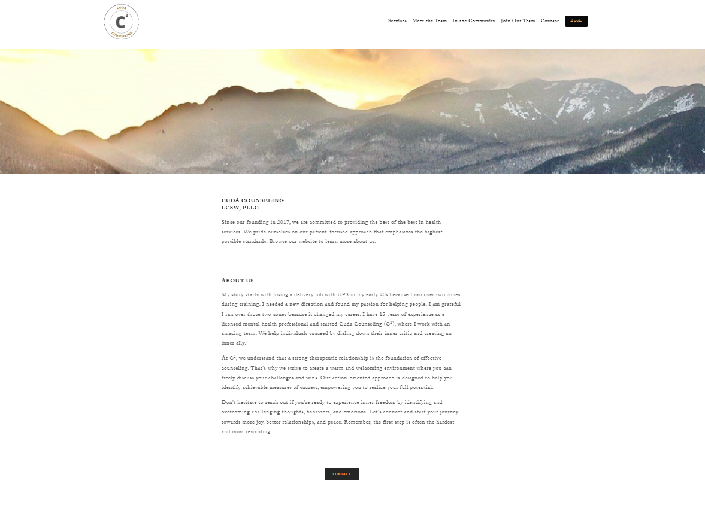

A dated site with no search strategy.
Cuda Counseling is a mental health practice serving Central New York, with online care across New York and Florida. The site had no conversion path, technical gaps and no content plan.
02 / What I DidFour workstreams, one owner.
| Skill | Before | What I shipped |
|---|---|---|
| Website redesign | Single page, no conversion path | Service architecture, trust signals and clear calls to action |
| Technical SEO | Indexing and architecture gaps | Crawl audit, indexing fixes, GA4 and GSC setup |
| Content strategy | No content plan | Service pages for high-intent local queries and an SEO-led blog |
| On-page SEO | Unoptimized pages | Titles, metas, internal links and keyword mapping sitewide |
Before and after.
Before
After


Organic is now the top channel, at 62% of sessions.
The site surfaced for 582 queries in May 2026, including "child therapists near me," "grief counselor near me" and "therapists near me."
Channel Mix: May 2026
Source: GA4 and Search Console, May 2026 vs May 2025, one year into the engagement.
05 / ContentBlog work that targets real demand.
Posts built from keyword research to support local topic authority.